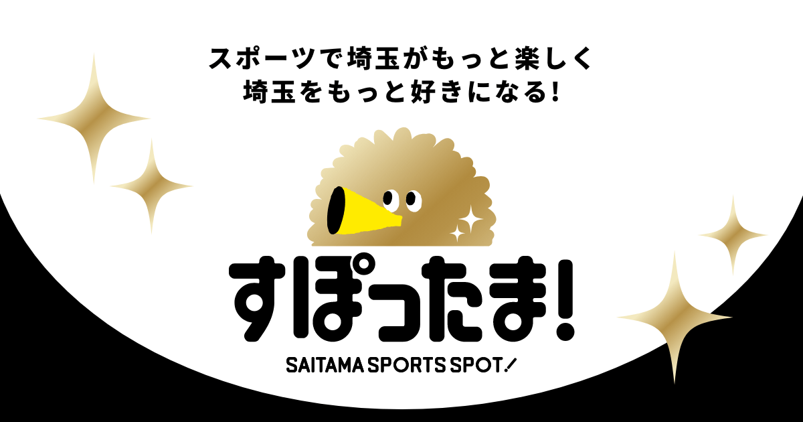
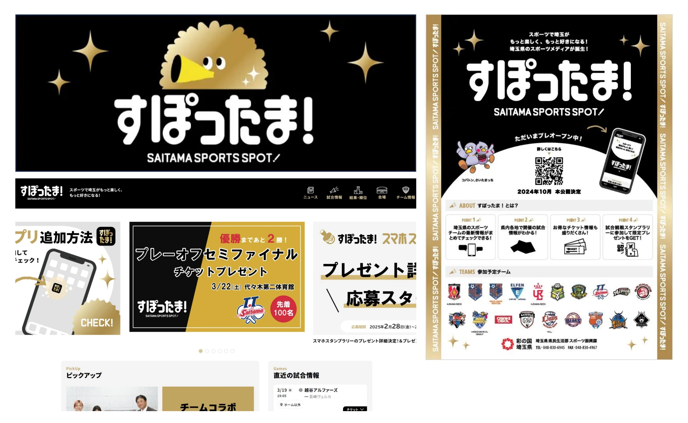

健康・スポーツ / 埼玉
埼玉スポーツ応援メディアすぽったま！


PROJECT INFORMATION
公式サイトを見る ↗（新しいタブで開く）埼玉県のスポーツ情報メディア「すぽったま！」。スポーツを地域の情報として届ける取り組みです。
01 / 背景とテーマ
輪郭を与える
県内のスポーツ情報は、チームごと・競技ごとにばらばらに置かれていました。どこで何が観られるのかが分からない。その見えにくさに輪郭を与え、県民がスポーツに出会う場所を一箇所にまとめたメディアです。
02 / SCHEMAの担当範囲
全体を整える
SCHEMAは企画・設計からデザイン、フロントエンド、取材・編集、映像、ブース、販促までを担当。最も手を掛けたのは、各チームがそれぞれの形式で出している情報を拾い、ひとつの画面で読める状態に整える運用の設計です。
03 / 取り組みの視点
枠組みをひらく
観戦のきっかけをつくることは、その先にある県民の健康につながっています。スポーツ振興という枠のなかに、日常の運動や習慣まで見据えた射程を持たせた取り組みです。